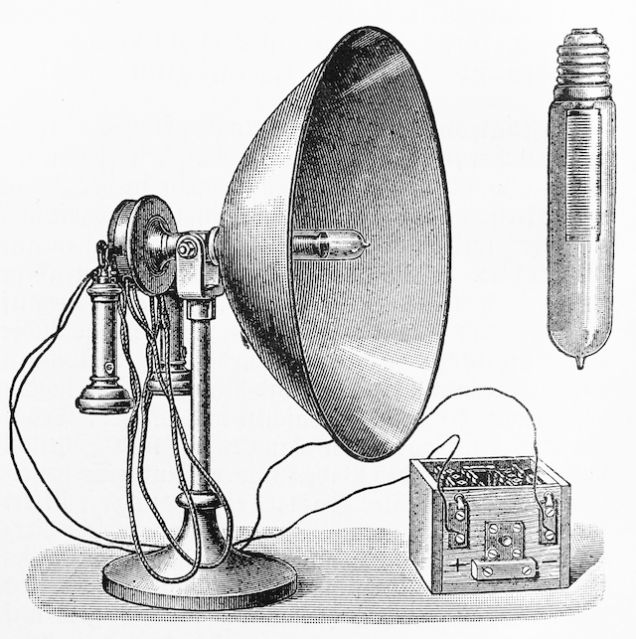

Fue un Ingeniero, inventor, mecánico, ingeniero eléctrico y fisico nacido en Serbia. Hizo muchas invenciones reconocidas sobre todo en el capo de el electromagnetismo.
Nikola Tesla amaba la ciencia pero no se interesaba mucho por los negocios muchos de sus proyecto nunca fueron puestos bajo protección de las patentes pues el creia en sus inventos para beneficio de la humanidad.
Ver Wikipedia"El presente es vuestro, pero el futuro es mío.
El desarrollo del hombre depende fundamentalmente de la invención. Es el producto más importante de su cerebro creativo.
En el espacio hay energía y es cuestión de tiempo que el ser humano logre aprovecharla. El científico no busca resultados instantáneos ni espera que sus ideas avanzadas sean aceptadas fácilmente, su deber es sentar bases, señalar el camino a los que vendrán.
Cualquier persona, en tierra o mar, podrá recibir noticias de cualquier lugar del mundo o mensajes particulares destinados solo a ella con un aparato sencillo y barato que cabe en el bolsillo."
Entre los más destacables inventos y descubrimientos que han llegado al conocimiento del público en general, podemos destacar:
Probablemente el “robo” más flagrante que nunca le hicieron a Tesla
No de los inventos mas utiles, pero aun es uno de los mas vistosos.
Es decir un helicoptero primitivo.